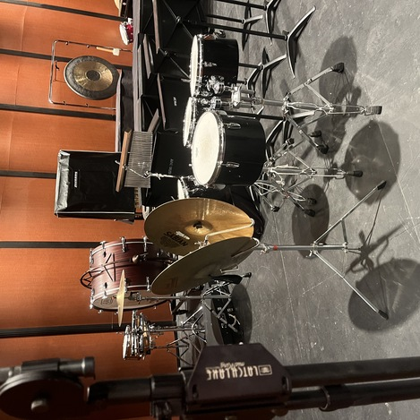
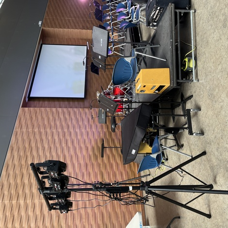

New album Teardrops On My Ceiling
out now wherever you get and stream your music! So excited for you guys to hear my new songs. It's been so fun getting to pour my heart out into a new project and that I get to release it to the world, it's been a dream come true. Thank you for always supporting me! Love, Seydie Wis

